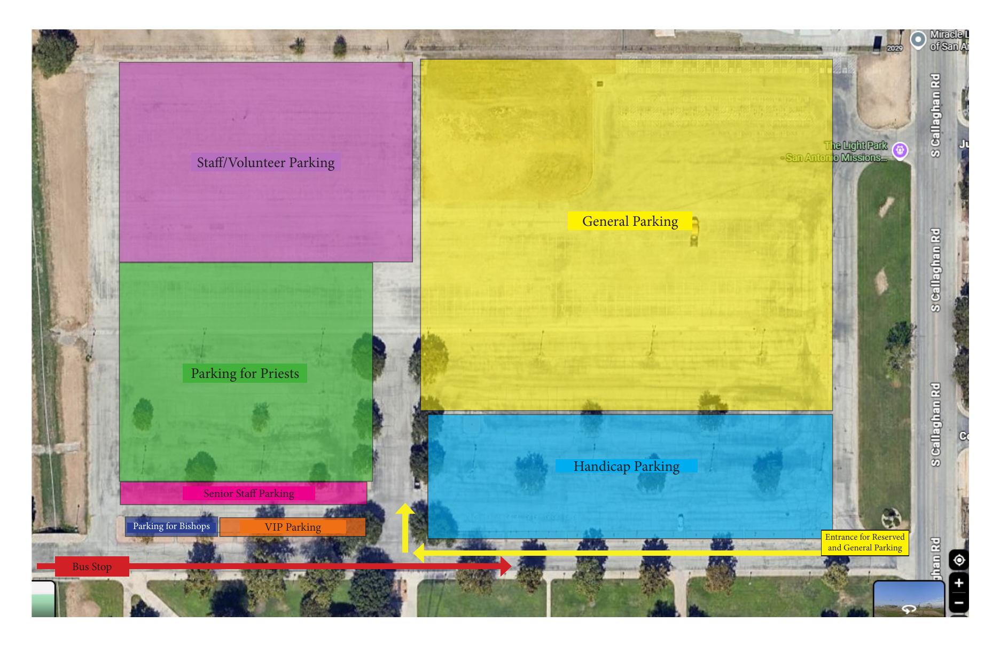
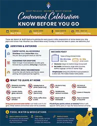
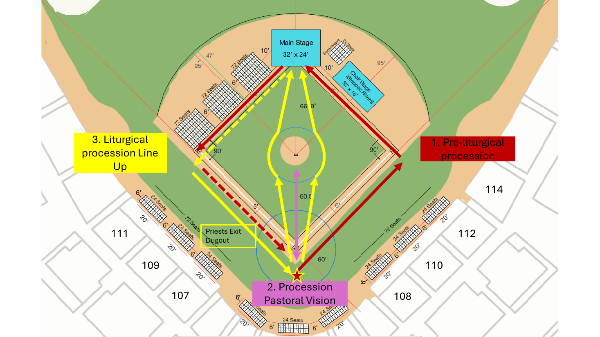

Get readyPrepárate
Three things to take care of before Saturday.Tres cosas por hacer antes del sábado.
-
Reserve your seatsReserva tus lugares
Register for the centennial celebration so your seats are saved.Regístrate para la celebración del centenario y guardaremos tus lugares.
Reserve seatsReservar lugares -
Ride the parish busViaja en el autobús parroquial
Want to ride to the celebration with the parish? Reserve your bus tickets. The bus leaves from the church.¿Quieres ir a la celebración con la parroquia? Reserva tus boletos de autobús. El autobús sale de la iglesia.
Reserve bus ticketsReservar boletos -
Wear your teal OLG T-shirtUsa tu camiseta turquesa de OLG
Pick up your shirt in the main campus pavilion next to the church.Recoge tu camiseta en el pabellón del campus principal, junto a la iglesia.
Know before you goLo esencial antes de ir
These are the stadium’s rules for every guest. A little preparation makes the day joyful.Estas son las reglas del estadio para todos los asistentes. Un poco de preparación hace el día más alegre.
Gates and arrivalPuertas y llegada
Gates open at 3 pm. Please arrive early: screening takes time, and the pre-Mass program begins at 3.
Las puertas abren a las 3 pm. Llega temprano: la revisión toma tiempo y el programa previo a la Misa comienza a las 3.
Use the Third Base Gate or the Home Plate Gate. Both are accessible. Everyone walks through a metal detector and every bag is inspected. If you leave and return, you will be screened again.
Usa la Puerta de Tercera Base o la Puerta de Home Plate. Ambas son accesibles. Todos pasan por un detector de metales y se revisa cada bolsa. Si sales y regresas, te revisarán de nuevo.
Please carpool if you can. It makes parking easier for everyone.
Si puedes, comparte el auto con familiares y amigos. Facilita el estacionamiento para todos.
Bag policyPolítica de bolsas
Only two kinds of bags are allowed:
- Clear tote, up to 12 × 12 × 6 inches
- Small clutch, up to 5 × 9 inches
- Diaper bags and medical bags are welcome and will be screened
Not allowed: backpacks, large totes and purses, duffel bags, luggage, camera bags and laptop bags.
Solo se permiten dos tipos de bolsas:
- Bolsa transparente de hasta 12 × 12 × 6 pulgadas
- Bolso de mano pequeño de hasta 5 × 9 pulgadas
- Se permiten pañaleras y bolsas médicas, y serán revisadas
No se permiten: mochilas, bolsas y bolsos grandes, maletas deportivas, equipaje, bolsas para cámara y para laptop.
Please leave at homePor favor, déjalo en casa
- Weapons of any kind, including licensed firearms and toy or replica weapons
- Outside food and drinks, and alcohol
- Coolers, flasks, glass containers and aerosol cans
- Signs and banners of any kind
- Air horns and noisemakers
- Drones and remote-controlled vehicles
- Laser pointers and fireworks
- Sticks, selfie sticks and bats
- Skateboards, skates and scooters
- Beach balls and inflatables
- Lawn chairs (outfield berm only)
- Armas de cualquier tipo, incluso armas con licencia y armas de juguete o réplicas
- Alimentos y bebidas del exterior, y alcohol
- Hieleras, licoreras de bolsillo, envases de vidrio y aerosoles
- Letreros y pancartas de cualquier tipo
- Cornetas de aire y objetos ruidosos
- Drones y vehículos de control remoto
- Punteros láser y fuegos artificiales
- Palos, palos para selfies y bates
- Patinetas, patines y scooters
- Pelotas de playa e inflables
- Sillas de jardín (solo en la ladera del jardín exterior)
Items found at the gate cannot be held for you. You are welcome to return them to your car and come back.
Los objetos prohibidos no se pueden guardar en la puerta. Puedes llevarlos a tu vehículo y regresar.
Water, food and medications. Bring your own water bottle (not glass); water stations and bottled water are available throughout. The Centennial is first a Mass, so concession stands will be closed. Baby bottles, formula and snacks for small children are welcome. Necessary medications and related snacks are allowed; please declare them at screening.
Agua, comida y medicamentos. Trae tu botella de agua personal (que no sea de vidrio); habrá estaciones de agua y agua embotellada en todo el estadio. El Centenario es, ante todo, una Misa, por eso los puestos de comida estarán cerrados. Se permiten biberones, fórmula y bocadillos para niños pequeños. Se permiten los medicamentos necesarios y los alimentos relacionados; decláralos en la revisión.
Where to parkDónde estacionarte
Enter through the entrance for reserved and general parking. Riding the parish bus? Look for the bus stop along the bottom of the map.Entra por la entrada de estacionamiento reservado y general. ¿Viajas en el autobús parroquial? Busca la parada de autobús en la parte inferior del mapa.

- General parkingEstacionamiento general
- Handicap parkingEstacionamiento accesible
- Staff and volunteer parkingPersonal y voluntarios
- Parking for priestsSacerdotes
- Senior staff parkingPersonal de alto nivel
- VIP parkingEstacionamiento VIP
- Parking for bishopsObispos
- Bus stopParada de autobús
Two parking entrances serve the stadium: one off the US-90 West access road and one off Callaghan Road. Follow the parking attendants. Buses, drop-offs and rideshare use the US-90 entrance. Lock your car and leave valuables at home.
Hay dos entradas de estacionamiento: una por la vía de acceso oeste de la US-90 y otra por la calle Callaghan. Sigue las indicaciones de los encargados. Los autobuses, las personas que dejan pasajeros y los servicios de transporte por aplicación usan la entrada de la US-90. Cierra tu auto con llave y deja los objetos de valor en casa.
The full guideLa guía completa
The official guide also covers families and children, accessibility, safety, weather, photos, and lost and found.La guía oficial también incluye familias y niños, accesibilidad, seguridad, clima, fotos y objetos perdidos.

Families with children under 14 receive a free family Mass bag with a children’s guide and activity sheet in English and Spanish, while supplies last. Deaf Catholics have reserved seating with ASL interpreters. Lost items are held for 15 days; call (210) 734-2620.
Las familias con niños menores de 14 años reciben gratis una bolsa familiar con una guía de la Misa para niños y una hoja de actividades en inglés y español, hasta agotar existencias. Los católicos sordos tienen asientos reservados con intérpretes de Lengua de Señas Americana (ASL). Los objetos perdidos se guardan 15 días; llama al (210) 734-2620.
Read the full guideLeer la guía completaInside the stadiumDentro del estadio
The layout for the three processions, with the main stage behind home plate and seating on the field.La disposición de las tres procesiones, con el escenario principal detrás de home plate y asientos en el campo.

WatchMira
Two videos about the celebration. They open on YouTube.Dos videos sobre la celebración. Se abren en YouTube.